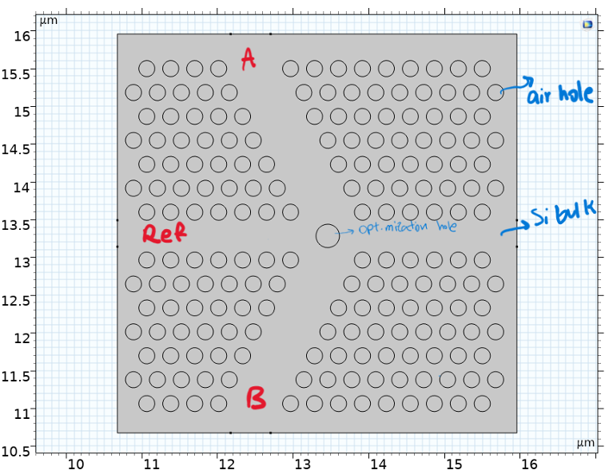

Context and Motivation
All-optical logic gates perform Boolean operations using only light — no electrical signal conversion. This eliminates the optoelectronic bottleneck in photonic circuits (optical-to-electrical-to-optical conversion), reducing latency and power consumption. The goal is ultimately a fully optical information processing fabric where signal routing, switching, and computation all happen in the photonic domain.
Photonic crystals (PhCs) — periodic dielectric structures with a photonic bandgap — are a natural substrate for all-optical gates. Line defects in a PhC create waveguiding channels; point defects create resonant cavities. The bandgap prevents field propagation in all other directions, providing near-perfect lateral confinement. Signal switching is achieved through constructive or destructive interference at waveguide junctions — no nonlinear material is required for the basic linear-optics implementation studied here.
This work reproduces the design methodology and simulation results of Rani et al. (2015), who proposed a geometry for implementing NOT, AND, and OR gates in a square-lattice 2D PhC at 1.55 μm using a linear-interference mechanism. The COMSOL FDTD simulation validates the published transmission spectra and field distributions.
Photonic Crystal Design
| Parameter | Value |
|---|---|
| Lattice type | Square, 2D |
| Rod material | Silicon (n = 3.48) |
| Background medium | Air (n = 1.0) |
| Rod radius | 0.2a (where a is lattice constant) |
| Operating wavelength | λ = 1.55 μm (telecom C-band) |
| Photonic bandgap (TM) | Covers 1.55 μm for the chosen r/a ratio |
| Simulation method | COMSOL FDTD (2D, TM polarisation) |
| Boundary conditions | PML on all outer boundaries; periodic along crystal axes |
Switching Mechanism
The gate operates on the principle of optical interference at a T-junction or Y-junction in the PhC waveguide. Two input beams A and B are fed into separate waveguide branches that meet at a junction point. The relative phase between the two inputs determines whether they interfere constructively (producing high output intensity at the designated output port) or destructively (producing low output).
Gate Truth Tables
| Gate | A = 0, B = 0 | A = 1, B = 0 | A = 0, B = 1 | A = 1, B = 1 |
|---|---|---|---|---|
| NOT A | 1 | 0 | – | – |
| AND | 0 | 0 | 0 | 1 |
| OR | 0 | 1 | 1 | 1 |
In the PhC implementation, logical "0" corresponds to no input wave; logical "1" corresponds to a continuous-wave input at λ = 1.55 μm with a defined amplitude. The output intensity at the designated detector port determines the logical output.
COMSOL Simulation Results


Design Considerations and Limitations
The linear-interference gate design studied here has two key advantages: it requires no nonlinear material (no threshold power, no material damage), and it operates at a single wavelength. The main limitation is that input phases must be precisely controlled — phase drifts due to thermal expansion or fabrication tolerances directly affect contrast ratio. This is a well-known challenge in integrated photonic circuits.
A practical all-optical gate for on-chip use would typically employ a nonlinear mechanism (e.g., Kerr-based refractive index modulation) so that one signal controls the transmission of another without requiring fixed phase relationships. The linear interference approach is valuable as a clean pedagogical demonstration of PhC waveguide physics and COMSOL FDTD methodology.